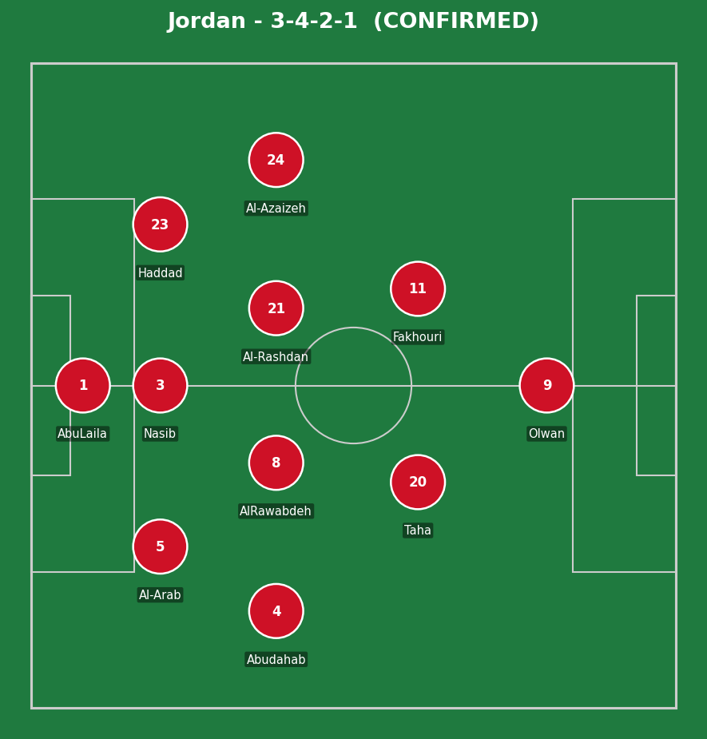
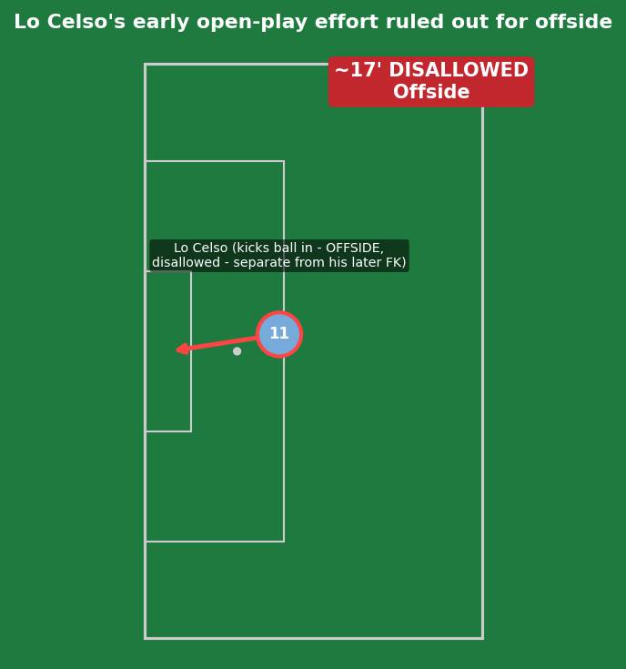
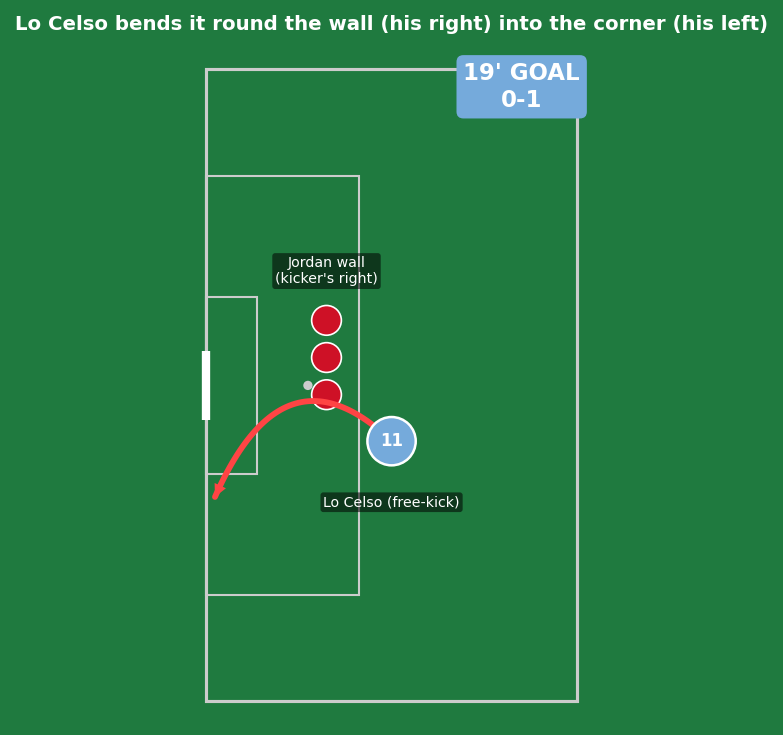
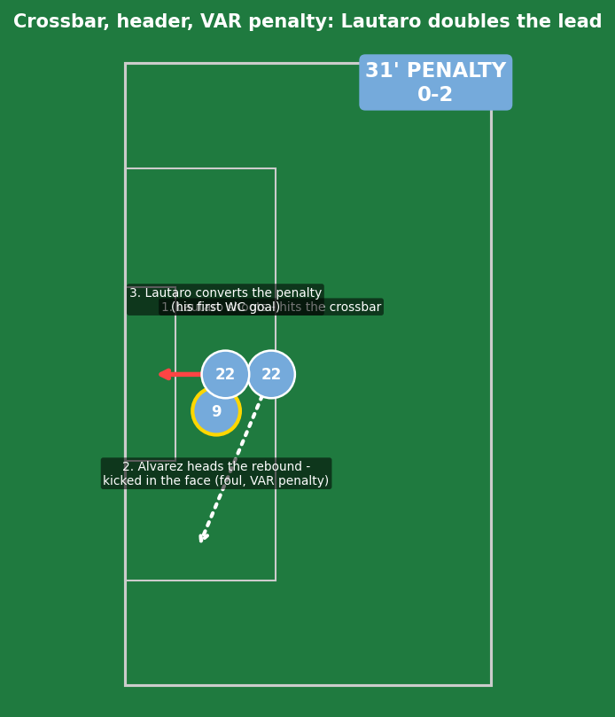
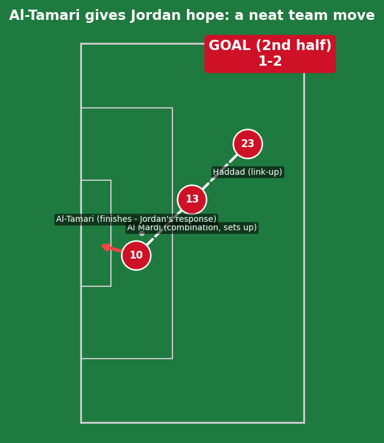
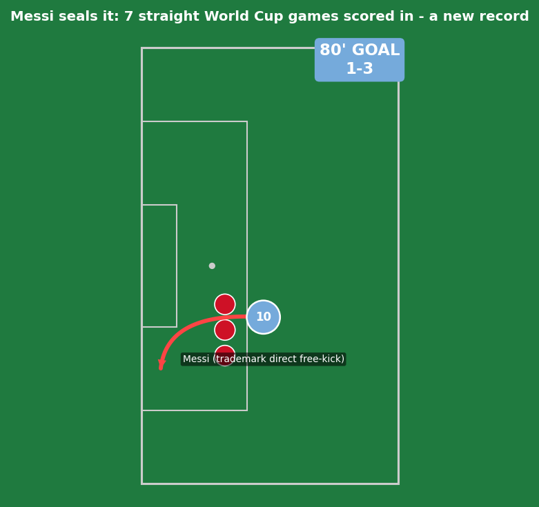
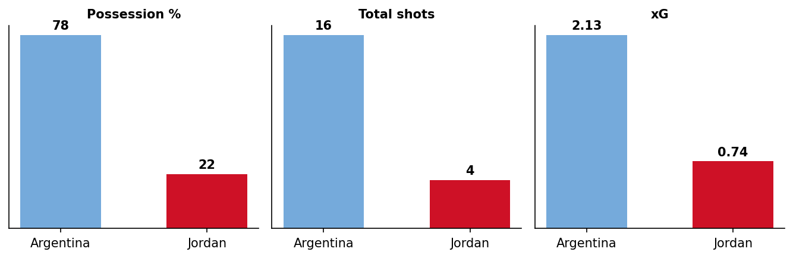
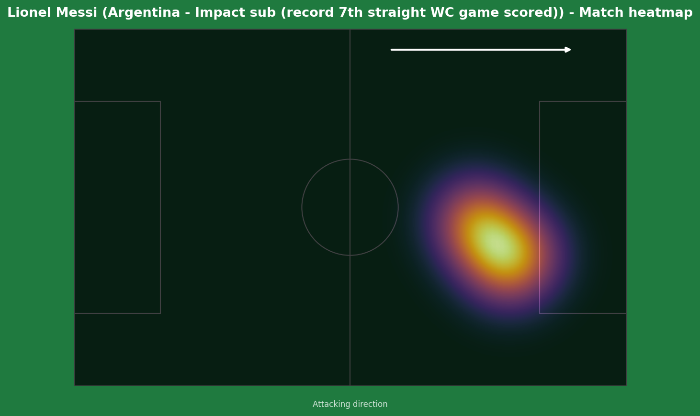

Jordan vs Argentina
Nine changes from Argentina's previous XI made no difference to the result. Giovani Lo Celso, finally making his first World Cup start at 30 after missing Qatar 2022 through injury, opened the scoring with a direct free-kick in the 19th minute. Lautaro Martinez doubled the lead from the penalty spot in the 31st, converting his first World Cup goal after a VAR review uncovered a foul in the build-up. Jordan responded with real spirit through Musa Al-Tamari in the second half, but Messi - introduced at the 60th minute, three days after turning 39 - settled the contest in the 80th with a trademark direct free-kick, a goal that extended his own all-time World Cup scoring record to 19 and made him the first player ever to score in seven consecutive World Cup matches.


Jordan (3-4-2-1): Abulaila; Al-Arab, Nasib, Haddad (c); Abudahab, Al Rawabdeh, Al-Rashdan, Al-Azaizeh; Taha, Fakhouri; Olwan. Argentina (4-4-2): E. Martinez; Tagliafico, Senesi, Otamendi (c), Montiel; Lo Celso, Palacios, Paredes, Paz; J. Alvarez, Lautaro Martinez.
Confirmed: Messi, Musso, Romero, Molina, Mac Allister, De Paul, Enzo Fernandez, and Almada all started on the bench - nine changes in total from Argentina's previous XI, with the group already won. Marcos Senesi, Nico Paz, and Lo Celso all earned their first World Cup starts of the tournament.
Despite the wholesale changes, Argentina's control was total and immediate - 83% possession inside the first 10 minutes, pinning Jordan back before they'd had any chance to settle. This wasn't really about formation or tactical nuance; it was a pure gap in individual quality and game management, with a heavily rotated Argentina XI still comfortable enough to dictate every phase of the match.
Jordan's 3-4-2-1 held reasonably well defensively in the opening exchanges, but conceding from a free-kick and a penalty inside the opening half-hour meant they were chasing the game from early on - the same vulnerability around set pieces that cost them against Algeria resurfaced here. Credit to Sellami's halftime adjustments, though: introducing fresh legs at the break directly led to Al-Tamari's goal, a genuine team move built on quick combination play down the right rather than an isolated piece of individual brilliance.
The key tactical moment had nothing to do with shape - it was Scaloni's 60th-minute substitution bringing on Messi. Even in a match Argentina already controlled comfortably, his introduction visibly raised the crowd's anticipation and the team's directness, and he duly delivered the signature moment everyone expected.

A separate, earlier incident from his actual goal - a few minutes before his free-kick, Lo Celso turned the ball into the net from open play, but the offside flag went up correctly. Worth noting as a distinct moment in its own right, not a precursor to the free-kick that followed.

This was a genuine moment of individual technique, not a scramble or a defensive error - Mohannad Abutaha's foul on Lo Celso just outside the box (correctly carded yellow) gifted Argentina a direct free-kick in a clearly shootable zone. Lo Celso, known throughout his career at PSG, Tottenham, and Real Betis for his set-piece quality, curled his left-footed strike around the edge of the defensive wall and beyond the goalkeeper's reach - the first direct free-kick goal for Argentina at a World Cup since Messi's against Nigeria in 2014. A genuinely well-executed dead-ball routine, not a fortunate deflection or a mistake from Jordan's wall.

A genuinely lucky break turned into a clinical finish. Lautaro's own initial close-range shot crashed off the crossbar - real quality in getting the chance, but not the moment that produced the goal. Julian Alvarez reacted fastest to the rebound, heading it back toward goal, only for goalkeeper Yazeed Abulaila to tip it over - and it was only on VAR review that officials spotted Alvarez had been kicked in the face during that exact phase of play, awarding a penalty. Lautaro stepped up himself and converted calmly - his first-ever World Cup goal, marked with a deliberate "cleansing" gesture. A goal built on a combination of genuine quality (the initial chance, the alert reaction to the rebound) and a foul that wasn't even visible without a review - not a Jordan blunder in the conventional sense.

Real credit to Jordan here - this was constructed, not gifted. A combination involving Haddad and Al Mardi down the right created the chance, and Al-Tamari finished what his side had actually built through patient interplay rather than a single defensive lapse from Argentina. Sellami's half-time changes deserve real credit for injecting the fresh energy that made this move possible.

Introduced in the 60th minute, three days after his 39th birthday, in the very stadium where he'd broken the all-time World Cup scoring record just days earlier - Messi needed only 20 minutes to find the net again. Another direct free-kick, curling low into the bottom corner with the same disguised pace and precision that's defined his dead-ball career, leaving Abulaila rooted. This was his sixth goal of the tournament so far, extending his career World Cup tally to 19, and - the number that matters most historically - his seventh consecutive World Cup match with a goal, surpassing the six-game streaks of both Just Fontaine and Jairzinho to stand alone with the longest scoring run in the competition's history. There is, once again, nothing here to criticize: a substitute appearance in a dead rubber, and he still produced a genuinely elite piece of technique that nobody else on the pitch could have replicated.

A 2.13 to 0.74 xG gap and 78% possession reflects exactly what the scoreline suggests - comprehensive Argentine control, even with nine changes to the starting XI.

A cameo appearance that still managed to produce the tournament's most historically significant individual storyline. Coming on for a side that already had the game won, in a dead-rubber fixture against World Cup debutants, Messi still delivered a moment of pure technical quality that none of his teammates - several making their first World Cup starts - could have produced. The streak now stands alone in World Cup history, surpassing two genuine legends of the competition (Fontaine, Jairzinho) by a full match.
Illustrative reconstruction based on known event locations, not raw GPS tracking data.
Argentina
Lo Celso - 8.5 (first WC goal, free-kick)
Lautaro Martinez - 7.5 (penalty, first WC goal)
Messi - 8.0 (impact sub, record goal)
Alvarez - 7.0 (won the penalty)
Jordan
Al-Tamari - 7.0 (well-taken team goal)
Al Mardi - 6.5 (assist involvement)
Abulaila - 5.5 (beaten by two world-class free-kicks)
Haddad (c) - 6.5 (battled to the end)
- Argentina complete a perfect group stage (three wins, nine goals scored) without ever needing to rely solely on Messi - Lo Celso and Lautaro's first World Cup goals are a genuine sign of squad depth heading into the knockouts.
- Messi's seven-straight-games scoring streak is now a standalone record that may not be approached again for a generation - the defining individual storyline of the tournament continues to grow.
- Jordan's first-ever World Cup campaign ends without a point, but Al-Tamari's goal and the overall fight shown across three matches (scoring in every game) is a real foundation for a young footballing nation to build from.
Argentina advance to the Round of 32 to face Cape Verde in Miami on July 3. Jordan's historic first World Cup campaign comes to an end.